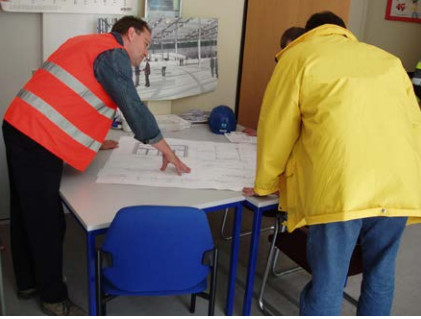

Jeder und jede Beschäftigte ist vor Aufnahme der Tätigkeit und danach in regelmäßigen Abständen, mindestens jedoch einmal jährlich, zu unterweisen. Die im Rahmen der Arbeitnehmerüberlassung entliehenen Arbeitnehmerinnen und Arbeitnehmer sind wie eigenes Personal zu behandeln, also auch entsprechend zu unterweisen. Unterweisungen müssen dokumentiert werden.
Die Gefährdungsbeurteilung berücksichtigt alle Gefährdungen, die mit der Erfüllung des Auftrages verbunden sind. Damit ist sie die Grundlage für die Zusammenstellung von Unterweisungsthemen (siehe Anhang 4).
Neben den allgemeinen Unterweisungen kommt den projektspezifischen Unterweisungen (Abb. 2-1) eine besondere Bedeutung zu. Bei der Einweisung der Mitar- beitenden in die Arbeitsaufgabe und die Baustelle sind ihnen auch die Schwerpunkte des Arbeitsschutzes für dieses Projekt zu vermitteln (siehe Anhang 3).

Abb. 2-1 Einweisung anhand von Plänen und projektspezifische Unterweisung
2.3.1 Anlässe einer projektspezifischen Unterweisung
Anlässe zu einer baustellenspezifischen Unterweisung sind u. a.:
2.3.2 Inhalte einer projektbezogenen Unterweisung
Die Inhalte einer projektbezogenen Unterweisung können z. B. sein:
Der Anhang 3 enthält beispielhaft Themen, über die Mitarbeitende vor Aufnahme ihrer Tätigkeiten auf der Baustelle unterwiesen werden können.